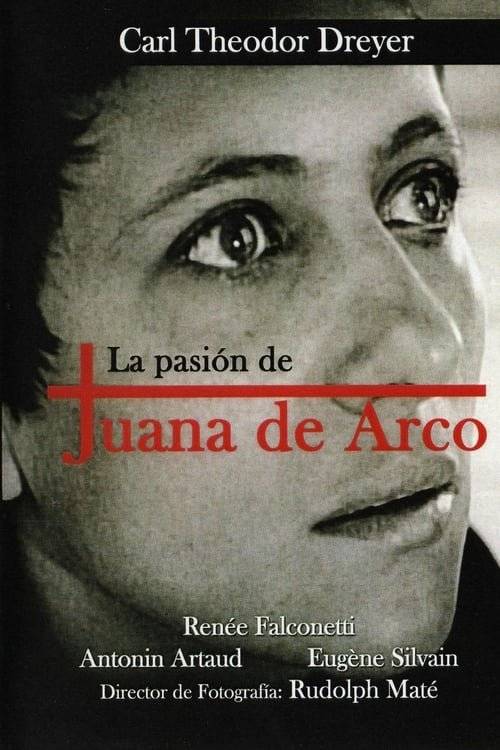

La pasión de Juana de Arco (1928)
Sinopsis Rápida
En el fragor de la Guerra de los Cien Años, una joven campesina guiada por visiones divinas se convierte en heroína nacional, solo para enfrentar una condena brutal por herejía. ¿Es Juana de Arco una santa o una bruja?
Sinopsis Detallada
La película de 1928, "La pasión de Juana de Arco", nos sumerge en el cautivador y trágico destino de la heroína francesa. Desde sus humildes orígenes hasta su liderazgo en el campo de batalla, la cinta sigue su ascenso meteórico y su posterior caída ante la acusación de brujería. La dirección ofrece una potente representación visual de la época, contrastando la valentía de Juana con la hipocresía y la manipulación política de sus acusadores. El juicio y la ejecución, filmados con impactante realismo, culminan en un final desgarrador que deja al espectador cuestionando la naturaleza del poder, la fe y la justicia. Una obra maestra del cine mudo que resuena con potencia hasta el día de hoy.
¿Por qué tenés que verla?
- Una poderosa representación de una figura histórica icónica.
- La dirección innovadora para su época, que utiliza recursos visuales impactantes.
- Su importancia como un ejemplo temprano del cine que trata temas históricos con profundidad.
- Una historia conmovedora sobre fe, valentía y la lucha contra la opresión.
Idea Extra
Comparación de la representación de Juana de Arco en esta película con otras adaptaciones cinematográficas y literarias posteriores. Análisis de la influencia del contexto histórico y religioso en la narrativa.